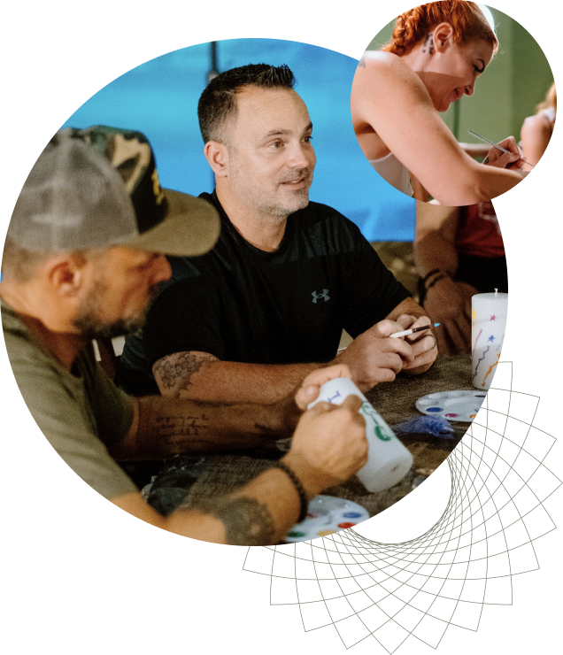

פתרון שניתן ללוחמי NAVY SEALS וליחידות מובחרות כדי לפתוח דף חדש, והנשיא טראמפ מקדם אותו בארה"ב כדי לעזור לחיילים. ועכשיו בית חב"ד למטייל ברזיל, בשיתוף תורמים, מביא לכם את זה בחינם — כאן בברזיל.

צפו בסרט In Waves and War — הסיפור של הלוחמים שהיו שם לפניכם.
הכתוביות בעברית נטענות אוטומטית. אם אינן מופיעות, לחצו על גלגל השיניים ← כתוביות ← עברית.
זה החל לפני עשור. לוחמים מהשייטת האמריקאית, בחיפוש אחרי ניקוי ראש שיוציא אותם מזיכרונות שרודפים אותם מהקרבות, הגיעו למקסיקו ועברו טיפול בשורש של צמח אפריקאי בשם אייבוגה. התוצאות שהחלו לזרום הובילו את אוניברסיטת סטנפורד, אחד מהמוסדות האקדמיים המובילים בארצות הברית, לבצע מחקר עומק בקרב 30 חיילים שעברו את הטיפול.
התוצאות היו חסרות תקדים: ירידה של כ-88% בתסמיני פוסט-טראומה, כ-87% בתסמיני דיכאון וכ-81% בתסמיני חרדה, חודש לאחר הטיפול. ההצלחה המדהימה הזאת הובילה לכך שבאפריל 2026 חתם הנשיא טראמפ על צו נשיאותי המורה על הקצאת 50 מיליון דולר למחקר נוסף בתחום.
במדינת סאו פאולו שבברזיל, השימוש באייבוגה חוקי, נרחב ומתבצע במסגרות רפואיות מפוקחות כבר עשרות שנים. הניסיון הרב וההתמקצעות, מאפשרים דווקא לנו בחב"ד סאו פאולו להציע לחיילים הישראלים גישה, לטיפול שכל אמריקה מחכה לו.
עבודה על הזיכרונות והדפוסים שעוצרים אתכם — פוסט-טראומה, דיכאון, חרדה ותגובות לחץ.
צילומי MRI לפני ואחרי הראו שינויים במבנה המוח, כולל גידול בכמות הסינפסות באונה המצחית.
ויסות מערכת העצבים, חזרה לשינה תקינה ובניית תשתית לרווחה לטווח ארוך.
כאן בברזיל האייבוגה חוקי כבר עשרות שנים, מה שהוביל לפתיחת קליניקות ולהתמקצעות שמאפשרת לנו להציע מלגת טיפול לכם — הלוחמים שלנו — שמבקרים בסאו פאולו.
כמתנת חיים על השירות והתרומה שלכם לישראל ולעם היהודי.
אנחנו אוהבים אתכם. מגיע לכם.
שורש האייבוגה הוא הלוצינוגן שנמצא בשימוש של תרבויות ילידיות באפריקה כבר מאות שנים. מחקרים מהשנים האחרונות מראים כי שימוש חד-פעמי בו מוביל לתיקון של פגיעות מוחיות ולריפוי טראומות, וישנם סימנים מעודדים המראים אף על סיוע בטיפול בפרקינסון, אלצהיימר ומחלות נוירולוגיות נוספות.
בניגוד לחומרים אחרים, השימוש באייבוגה שלא במסגרת רפואית מסוכן. לקיחתו מובילה לאטקסיה (אובדן שיווי משקל וקואורדינציה) למשך 12–24 שעות, ומצריכה מעקב רפואי צמוד אחר פעילות הלב. חשוב לדעת: אייבוגה נקשר למקרי הפרעת קצב לב קטלנית, גם במסגרות מפוקחות. בפרוטוקול של סטנפורד ניתן מגנזיום יחד עם האייבוגה כדי להפחית סיכון זה. הטיפול נעשה אך ורק במסגרת קלינית, לאחר בדיקות סינון ובדיקות לב מקדימות ותחת ניטור מלא — אך בדיקות אלה מפחיתות את הסיכון ואינן מבטלות אותו.
המטופל שוכב על מיטה במשך כ-12 שעות, עם עיניים מכוסות, בשעה שהחומר עובד. רוב המשתמשים מדווחים על חזיונות המעלים אירועים טראומטיים ומשמעותיים. צילומי MRI שנעשו לחיילים לפני ואחרי הטיפול הראו שינויים לטובה במבנה המוח, כולל גידול בכמות הסינפסות באונה המצחית.
הטיפול בשורש האייבוגה נחשב כבר עשרות שנים לטיפול פורץ דרך בהתמכרויות — מסיגריות, מריחואנה ואלכוהול ועד לסמים הקשים ביותר. בניגוד לטיפולי גמילה אחרים, מטופלים רבים מדווחים על סימני גמילה מופחתים משמעותית לאחר הטיפול.